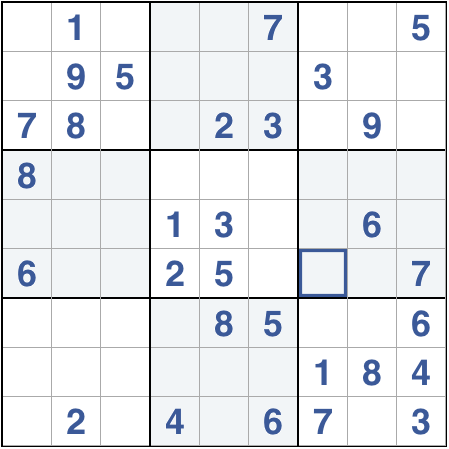
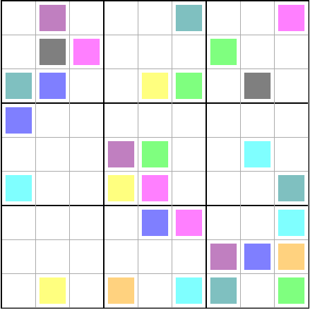

Updates
Welcome
We're working on a great way to play Sudoku. We're just starting and plan on rolling out lots of new features, so come back reguraly.
The Basics
Move the mouse over a cell and type a number from 1 to 9 with your keyboard. Typing 'm' will move you in and out of marker mode, you can use markers to provide hints in each cell. Each wrong answer will add 30 seconds to your time. That's it! Have fun.
Quality Assurance Extraordinaire
Joanne and Kelly
 